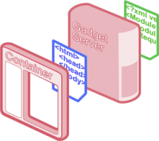

Welcome To Apache Shindig !
Apache Shindig is an OpenSocial container and helps you to start hosting OpenSocial apps
quickly by providing the code to render gadgets, proxy requests, and handle REST and
RPC requests.
Apache Shindig's goal is to allow new sites to start hosting social apps in under an hour's
worth of work.
What is Apache Shindig?

Apache Shindig is a container for hosting social application consisting of four parts:
- Gadget Container JavaScript: core JavaScript foundation for general
gadget functionality (read more
about gadget functionality). This JavaScript manages security,
communication, UI layout, and feature extensions, such as the OpenSocial API.
- Gadget Rendering Server: used to render the gadget XML into JavaScript
and HTML for the container to expose via the container JavaScript.
- OpenSocial Container JavaScript: JavaScript environment that sits on top
of the Gadget Container JavaScript and provides OpenSocial specific
functionality (profiles, friends, activities, datastore).
- OpenSocial Data Server: an implementation of the server interface to
container-specific information, including the OpenSocial REST APIs, with clear
extension points so others can connect it to their own backends.
Apache Shindig is the reference implementation of OpenSocial API
specifications, versions 0.8.x and 0.9.x, a standard set of Social Network APIs which includes:
- Profiles
- Relationships
- Activities
- Shared applications
- Authentication
- Authorization
See the overview page for more information.